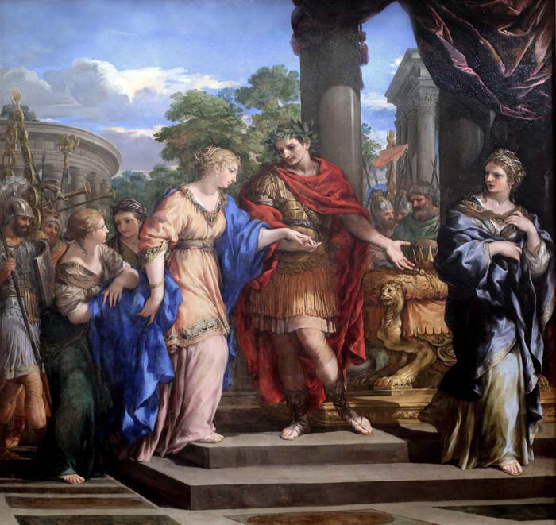

This website was created for my HONRS 390 course as part of the option that a non-traditional paper be completed. I chose to complete a website since I am a web developer and the idea of writing a basic six paper did not appeal to me. The use of a digital medium also presents me with the opportunity to add some effects which would not be possible otherwise. Programmatically speaking the website is fairly unique in that it contains a number of HTML5 and CSS3 animations which would not be possible in previous years. There is very little JavaScript on the website which should allow faster loading for clients and it has some optimizations for loading speeds. Sadly, this website is not mobile friendly for despite its bootstrap-like layout my custom version of it utilized does not support mobile.
I have also released the entire source code of this application under an GPL version 3 license so it can be freely download, modified, and shared. It’s lack of a server side setup requirement means it can be deployed in a few minutes and in any webhosting setup. Following this line of thought I have also tried to keep the code simple so that it can be easily understood and followed. If you wish to use it and have any questions regarding it’s use please do not hesitate to email me.
This website covers the portrayal of deception of women during the premodern era with respect to a few notable female figures. Cleopatra is perhaps one of the most commonly known of these since she was the queen of Egypt and one can argue has been heavily over romanticized in film and literature. Theodora was the wife of Justinian and ruler of the western portion of the Roman empire. Jezebel according to the biblical religious texts swayed her husband to worship idols rather than what they chose to believe as the one true god. All of these women had the power to rule either in their own right or through their husbands through the use of manipulation and deception if the stories about them are to be believed.
For more information feel free to start with the introduction page which explains what this website covers in a bit more detail as well as any of the links in the navigation bar. I also highly recommend hovering over the images if you do not recognize them.